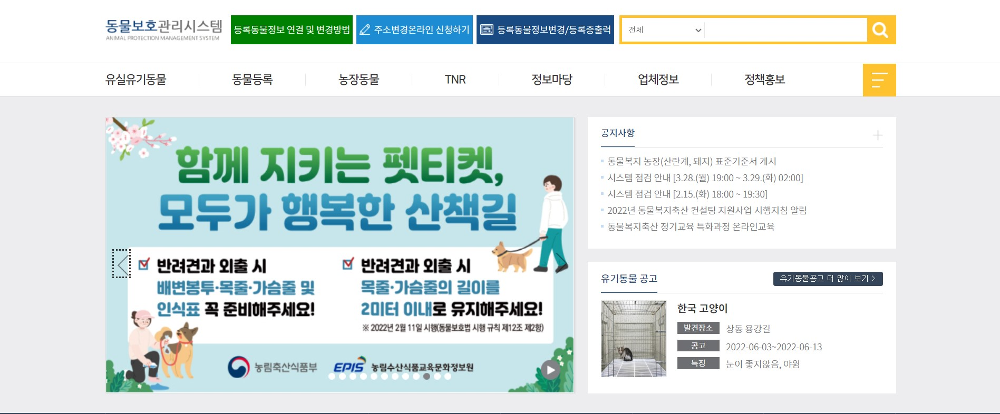
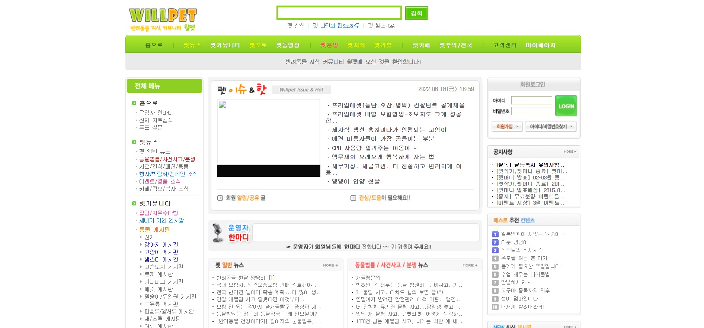
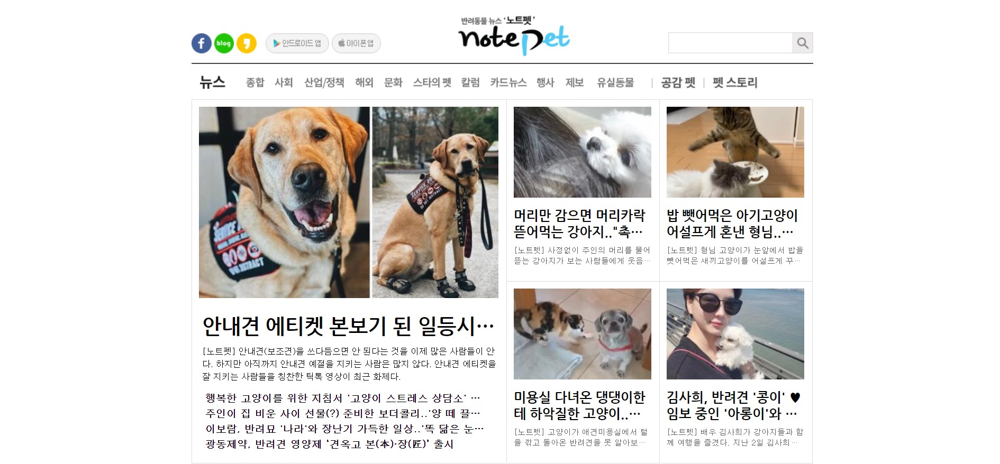

|  |
|
동물 보호 관리 시스템
반려동물 분실신고 동물 보호 관리 시스템 동물 등록 또는 유실 유기 동물 등록 등 여러 정보를 포함하는 사이트로,
|
|  |
|
Willpet
각종 반려동물 커뮤니티 사이트
Willpet은 강아지, 고양이 뿐만 아니라 햄스터, 토끼, 페럿, 원숭이, 새, 어류, 곤충, 연체동물, 강장동물 등 다양한 동물 게시판이 있습니다. 커뮤니티를 중심으로 뉴스, 법률, 사건사고, 사료, 간식 등의 뉴스 및 행사, 박람회 소식 등 다양한 정보까지 보실 수 있습니다. |
|  |
|
notepet
각종 반려동물 뉴스를 볼 수 있는 사이트
노트펫은 종합 동물 뉴스 뿐만 아니라
유실동물, 펫 상식, 바른 반려 동물 생활 정보, 산업과 정책 관련 정보를 보실 수 있습니다. |